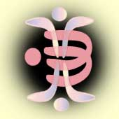

 |
Pøeklady èlánkù "Duchovní školy vzestupu" od Karen Danrich - "Míla" a Thomase Webera - "Oa" |
Úvod |
|
Chanelingy popisující stupnì vzestupu |
|
Svìtelný jazyk |
|
Diagramy |
|
Chanelingy s Matkou Zemí |
|
Chanelingy s Velkým Centrálním Sluncem |
|
Další Chanelingy |
|
Èlánky o vzestupu |
|